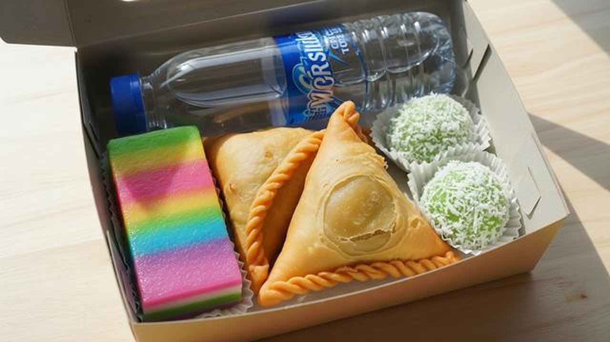

MY PROJECTS

Minesweeper
Game Minesweeper klasik yang dibangun dari nol menggunakan bahasa C++. Pemain harus menemukan semua kotak aman tanpa menginjak ranjau tersembunyi.

Sistem Rekomendasi Paket Camilan Berdasarkan Preferensi Pelanggan
Sistem yang merekomendasikan paket camilan sesuai preferensi pelanggan. Menggunakan divide and conquer untuk memecahkan masalah rekomendasi dan combine and conquer untuk menggabungkan hasil.

SelfForge
Aplikasi mobile produktivitas yang dibangun menggunakan Jetpack Compose. Dirancang untuk membantu pengguna mengelola tugas, membangun kebiasaan positif, dan meningkatkan produktivitas harian secara konsisten.